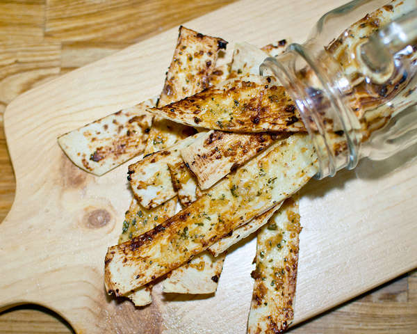

Garlic Stick
for 2 people
Tool
Oven
time
20m
Kcal
721.4kcal
Ingredients
6 6-Inch tortilla
3 tablespoons Minced garlic
3 tablespoons Condensed milk
2 tablespoons Butter
1 tablespoon Olive oil
1 tablespoon honey
1 tablespoon Sugar
1 tablespoon Parsley
A bit of salt
A bit of pepper
Recipe
Cut the tortilla into sticks. Actually, you can cut it in any shape you want.
Mix the garlic spread ingredients together. Melt the butter first. Mix it well. If it is too thick, add more oil or condensed milk.
Spread the garlic paste on each tortilla piece. The amount of spread was just right for 6 tortillas.
Bake it for 12-15 minutes at 180 degrees.
Bake until golden brown.
The crispy tortilla sticks with sweet garlic paste are delicious. You can eat this while watching a movie, and it doesnt take long to make. You can use the spread on bread or baguette too.
